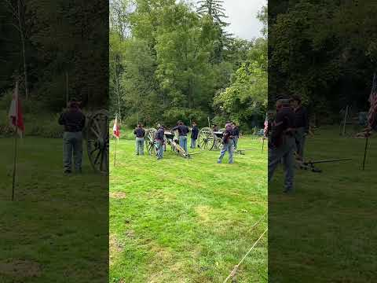
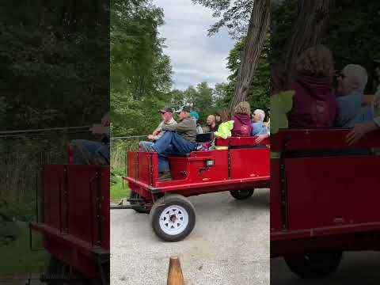

A Gocation Life destination
Malabar Farm
State Park
Lucas · Richland County, Ohio
Living history, a wagon ride, and a working farm in Pleasant Valley.

The place & its story
A little history
Author and conservationist Louis Bromfield created Malabar Farm as a place to put his ideas about restoring soil and sustainable farming into practice. His 32-room Big House grew around an existing farmhouse.
Ohio accepted the property in 1972, and Malabar became a state park in 1976. Today the working farm continues to share Bromfield's agricultural legacy with visitors.
The Big House also has a Hollywood chapter: Humphrey Bogart and Lauren Bacall married there on May 21, 1945.
History sources: Ohio Department of Natural Resources · Malabar Farm Foundation timeline
Gocation Life
Our Visit
Our Malabar Farm videos share two moments from the grounds: a Civil War cannon reenactment and a horse-drawn wagon ride. The cannon Short catches the sights and sound of the demonstration; the wagon clip offers a quieter glimpse of park life.
Come along for both moments below. These clips document the reenactment and wagon ride, with house tours and trail walks left as ideas for another visit.

Visit details follow the two videos' published descriptions. Uploaded May 17 and May 19, 2026; these upload dates do not establish the date of our visit.
Come along with us
Watch our Malabar Farm moments
Malabar Farms Wagon Ride #history #horsedrawnwagon #gocationlife
32-second cannon Short · 26-second wagon Short. Both verified as Gocation Life uploads.
A reason to come back
Ideas for a return visit
Step inside the Big House
Plan around a guided tour to learn more about Bromfield's home, books, and guests. House tours are seasonal and separate from exploring the grounds.
Follow the farm into the woods
Leave time for the visitor center, barn, and a nature walk. ODNR lists the 0.8-mile Butternut Trail as easy; choose a route for your needs using the current park map.
Future visit ideas based on ODNR's park guide. The horse-drawn ride in our clip is not a promise of the current tour format; check available tours and events.
Travel meets vintage
ATWW ideas nearby
Mansfield Antiques Gallery
118 N. Main Street
Mansfield, OH 44902
419-522-0230
A regional Along the Whimsy Way opportunity in downtown Mansfield's Historic Carrousel District, with antiques, furniture, décor, and resale finds. Plan a separate drive from the park and confirm current hours before heading over.
Visitor listing & contact details ↗Verified through Destination Mansfield and the official Shawshank Trail. This shop is a future outing idea; it is not documented in our Malabar Farm videos.
Explore Along the Whimsy Way ↗Before you go
Plan a visit
Find Malabar Farm
4050 Bromfield Road
Lucas, OH 44843
Park office: 419-892-2784
Address: official Shawshank Trail listing.
Grounds & visitor center
ODNR lists park hours of 6 a.m.–10 p.m. daily and visitor center hours of 9 a.m.–5 p.m. year-round. Building and activity hours differ; check for changes before traveling.
House & farm tours
Big House tours run seasonally from April into December, with a reduced schedule in spring and late fall. Farm tours run May–October, weather permitting. Both have admission charges; confirm current prices, departure times, and availability with the park.
Arrive at least 15 minutes before a scheduled tour to buy tickets. Contact the office about group reservations and access needs.
Choose your day
Check the official park guide for maps, trail information, closures, and current events. Reenactments and special wagon rides depend on the event schedule.
Official visitor information ↗Visitor details and linked sources checked October 27, 2026. Confirm schedules and access directly with the park before setting out.